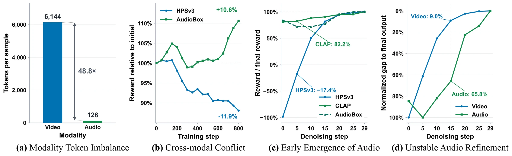
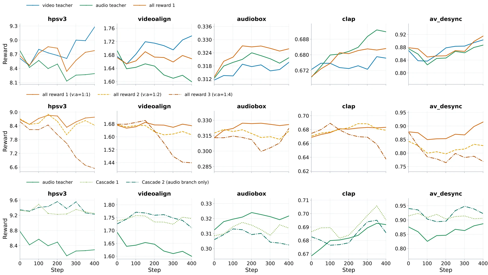
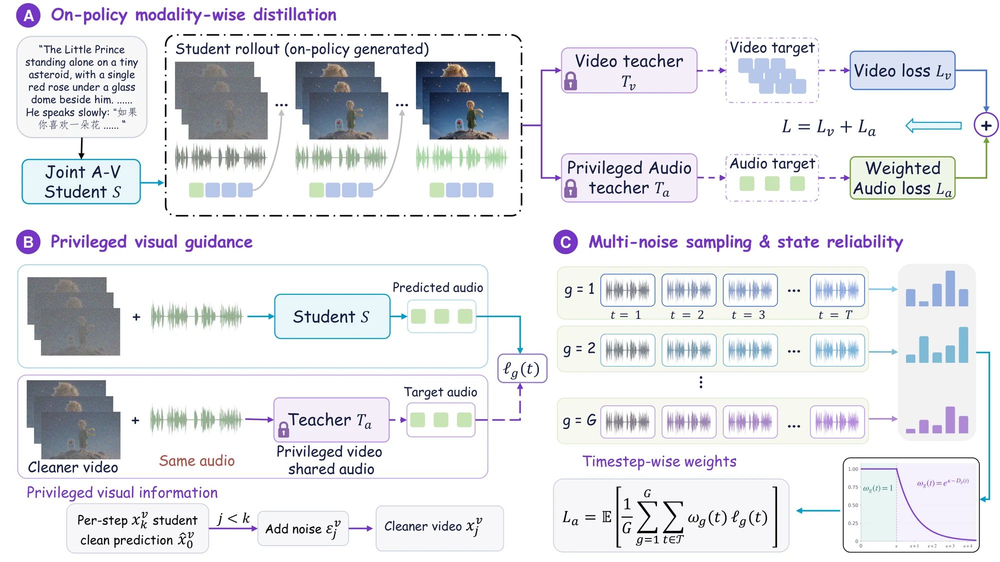

1AFFILIATION_ONE 2AFFILIATION_TWO
†Corresponding author
Reinforcement learning (RL) elevates joint audio-video generation, but optimizing heterogeneous, modality-specific audio and video rewards often introduces cross-modal interference. On-policy distillation (OPD) alleviates this issue by transferring the capabilities of specialized audio and video RL teachers into a single student model. However, a significant imbalance in cross-modal token counts leaves audio with sparse supervision, causing unstable distillation. We observe that naively increasing the audio loss weight fails to solve this problem since audio learning relies heavily on visual context, indicating richer visual cues are crucial to offset sparse audio signals.
To address this, we propose OmniOPD, a modality-wise on-policy distillation framework designed for balanced and stable audio-video generation. First, we construct privileged visual information using asymmetric noise scheduling, allowing the audio teacher to generate more informative targets from cleaner video context. Second, we introduce grouped multi-noise sampling to expand audio supervision coverage and stabilize training. Third, we introduce timestep-wise importance weighting based on teacher-student transition divergence, preserving reliable supervision while down-weighting unreliable learning signals, to stabilize fluctuations in audio learning. Evaluated on JavisBench and VBench demonstrate OmniOPD preserves audio quality while significantly enhancing video generation, achieving effective joint distillation.

Figure 2: Motivation analysis of audio-video joint learning. (a) Audio and video exhibit a substantial token imbalance, leading to training instability. (b) Optimization guided solely by audio rewards is unstable and can degrade video quality. (c)(d) Audio performance improves early during denoising, but audio refinement remains less stable than video refinement.
CARD_ONE_TEXT
CARD_TWO_TEXT
CARD_THREE_TEXT

Figure 3: A comprehensive analysis of audio-video coupling during optimization. The top row compares optimization with video-only, audio-only, and joint rewards. The middle row compares three joint-reward configurations, including increased audio reward weights. The bottom row compares audio-only optimization with two Cascade variants that optimize video first and then audio.
Audio-only reward optimization is unstable and can degrade video quality; increasing audio reward weights fails to resolve these conflicts and can further destabilize training.
Joint-reward optimization yields limited gains due to conflicts among reward objectives across modalities.
Sequential video-to-audio optimization stabilizes training, suggesting that cleaner and more stable video context is important for audio learning.

Figure 4: Overview of OmniOPD. (A) On-policy modality-wise distillation transfers knowledge from frozen video and audio teachers to a joint audio-video student using student-generated rollouts. (B) Privileged visual guidance provides the audio teacher with cleaner video context while sharing the same audio state with the student, yielding more informative audio supervision. (C) Multi-noise sampling expands audio supervision across noise realizations and denoising steps, while state-reliability weighting controls the contribution of unreliable learning signals.
OVERVIEW_PARAGRAPH.
Benchmark comparison. Best results in blue, second-best underlined. (↑: higher is better; ↓: lower is better).
| Method | Backbone | Group A | Group B | ||
|---|---|---|---|---|---|
| Metric ↑ | Metric ↑ | Metric ↑ | Metric ↑ | ||
| CATEGORY_ONE | |||||
| BASELINE_A | SIZE | 0.00 | 0.00 | 0.00 | 0.00 |
| BASELINE_B | SIZE | 0.00 | 0.00 | 0.00 | 0.00 |
| CATEGORY_TWO | |||||
| BASELINE_C | SIZE | 0.00 | 0.00 | 0.00 | 0.00 |
| Ours | SIZE | 0.00 | 0.00 | 0.00 | 0.00 |
| Ours Δ | -- | +0.00 | +0.00 | +0.00 | +0.00 |
Table 1.
Left: LTX-2.3 (Baseline) ↔ Right: OmniOPD (Ours). Click a clip to play it with audio.
Side-by-side comparison: LTX-2.3 (Baseline) vs. OmniOPD (Ours). Click a clip to play it with audio. Prompts are abbreviated for display.
@article{key2026project,
title={OmniOPD: Stable On-Policy Distillation for Joint Audio-Video Generation},
author={LAST, FIRST and LAST, FIRST},
journal={arXiv preprint arXiv:XXXX.XXXXX},
year={2026}
}